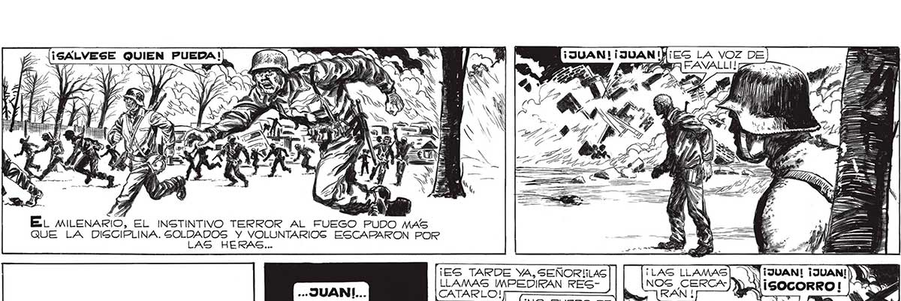
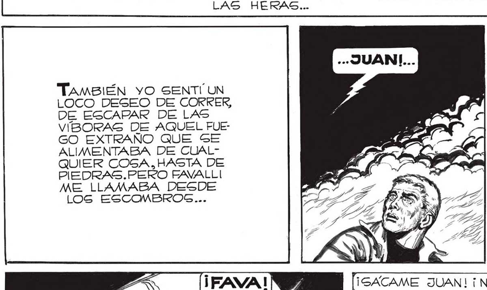
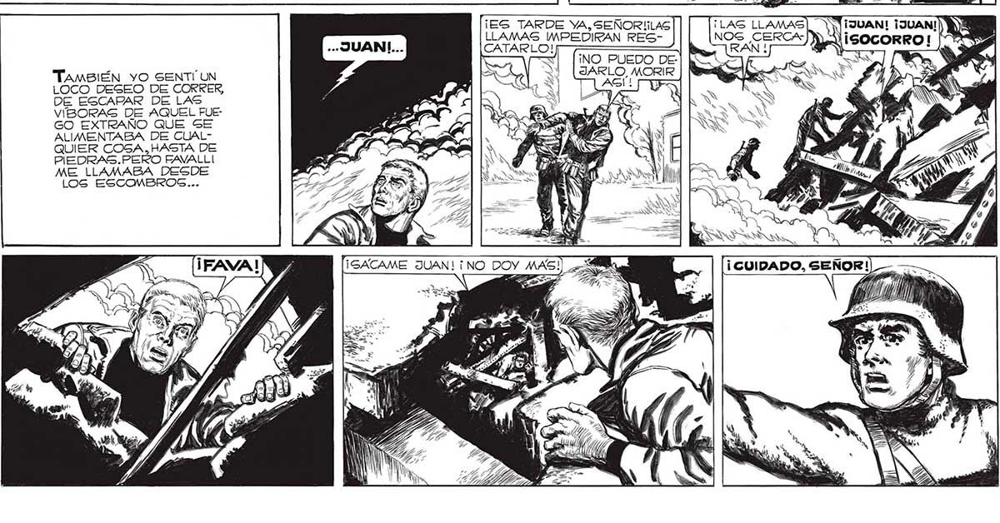

¡ES LA VOZ DE RAVAL e 2 200 5d = Do E a R 2 EN e S ¡ : AA Ñ RA 6 N | y A , 5 7 y UY » A Le SS S NS ) CEP WEE NT y Á y q O IT : ES : N . Hs Sd ye K e a A Visita = a — Y ¡dd 0 El MILENARIO, EL INSTINTIVO TERROR AL FUEGO PUDO MAS QUE LA DISCIPLINA. SOLDADOS Y VOLUNTARIOS ESCAPARON POR LAS HERAS... ¡ES TARDE YA, SEÑOR!IILAS LLAMAS IMPEDIKRAN RES¡NO PUEDO DEJARLO, MORIR NOG CERCA RÁN ! TAmsiÉN yO SENTÍ UN LOCO DESEO DE CORRER, DE ESCAPAR DE LAS VÍBORAS DE AQUEL FUE: GO EXTRAÑO QUE SE ALIMENTABA DE CUALQUIER COSA,HASTA DE PIEDRAS.PERO FAVALLI ME LLAMABA DESDE LOS ESCOMBROG... ' y al NN ¡ CUIDADO, SEÑOR! ¡GACAME JUAN! ¡NO DOY MAS! li M0) MS > EA LAS y MES x 5 y Í 1 ja LA 7 JA Po NN NE A ES E rl Ú


